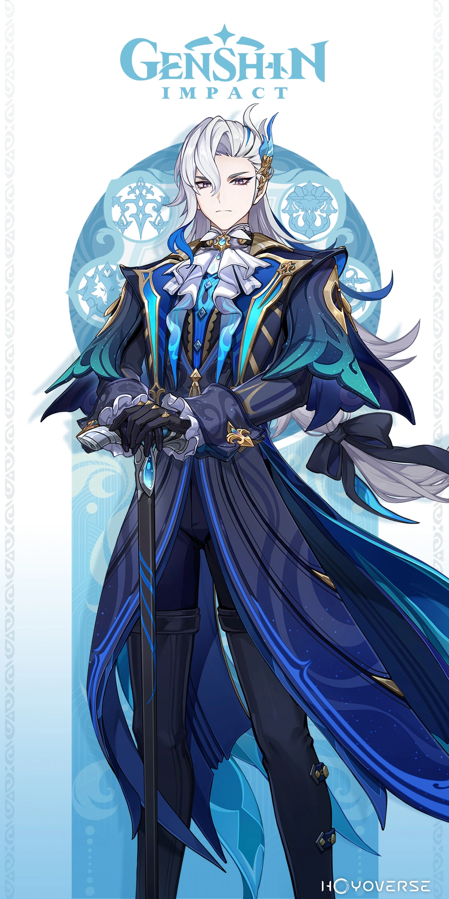

◆ Nom : Chasca
◆ Titre : Arbitre du ciel
◆ Médiatrice des Tlalocans
◆ Œil divin : Anémo
◆ Constellation : Vultur Gryphus
◆ Nom : Lyney
◆ Titre : Spectacle de fantasmagorie
◆ Magicien renommé de la Cour de Fontaine
◆ Œil divin : Pyro
◆ Constellation : Felis Fuscus

◆ Nom : Neuvilette
◆ Nom : Neuvilette
◆ Titre : Ordonnateur du jugement inexorable
◆ Iudex de Fontaine
◆ Œil divin : Hydro
◆ Constellation : Leviathan Judicator